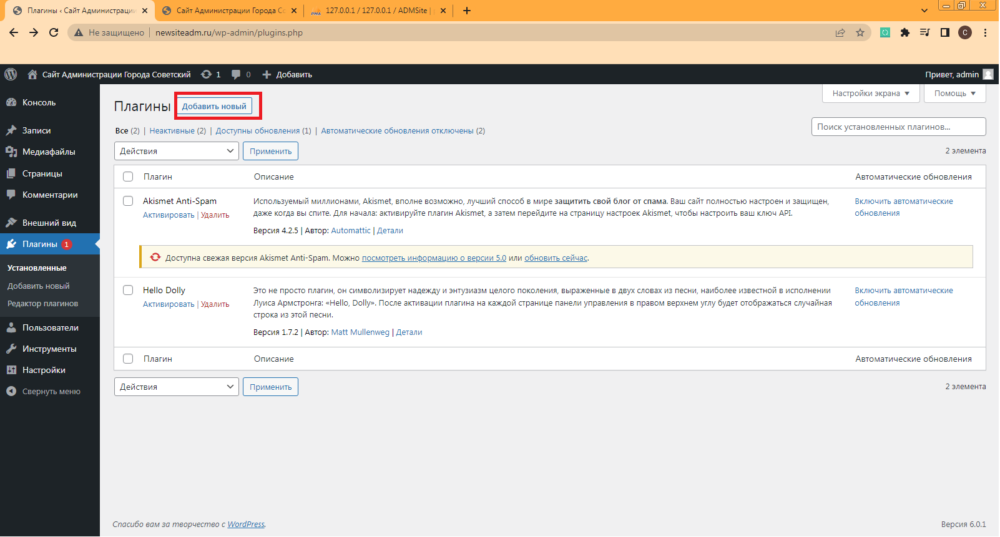

Для сайта требуется плагин, при помощи которого можно создать форму и разместить ее на страницу.
Я буду использовать плагин WPForms.
В консоли WordPress переходим во вкладку Плагины.
Рис 2.3 Вкладка плагины.
После загрузки страницы нажимаем на кнопку добавить новый.
Рис 2.4 Вкладка плагины.
Ищем плагин WPForms и нажимаем кнопку установить.
Рис 2.5 Кнопка установки плагина.
Установка проходит в пару секунд, после этого нужно плагин активировать , для этого нажимаем на кнопку «Активировать».
После активации настройка плагина появилась слева в меню. Нажимаем на нее ,после чего, мы попадаем меню настройки плагина.
Рис 2.6 Меню настройки плагина.
Нажимаем кнопку создать свою первую форму, затем выбираем пустую форму. Для формы я выбрал поля Имя, телефон, E-Mail и текст.
Рис 2.7 Создание формы .
После того как форма готова, мы ее сохраняем и можем разместить на странице сайта.
Для этого мы переходим в режим редактирования страницы , нажимаем на символ + ищем виджет WPForms. Нажимаем на него и выбираем форму которую мы создали
Рис 2.8 Форма на странице.
Таким образом , мы создали форму и разместили ее на странице сайта.
made by Smirnov Nikita and ko in 2022